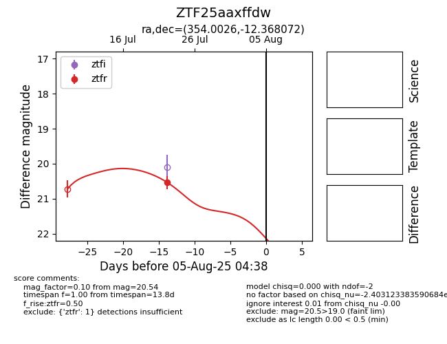

Target ZTF25aaxffdw at 2025-08-05 04:38, see:
FINK: fink-portal.org/ZTF25aaxffdw
Lasair: lasair-ztf.lsst.ac.uk/objects/ZTF25aaxffdw
ALeRCE: alerce.online/object/ZTF25aaxffdw
alt names
ZTF25aaxffdw (ztf,fink)
coordinates:
equatorial (ra, dec) = (354.0026,-12.36807)
galactic (l, b) = (69.1092,-66.97619)
photometry
last ztfr=20.54
1 ztfr detections
